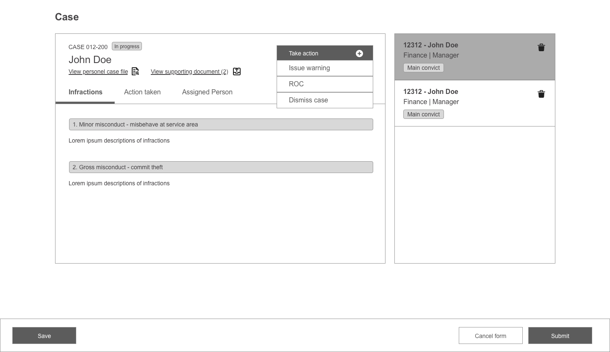
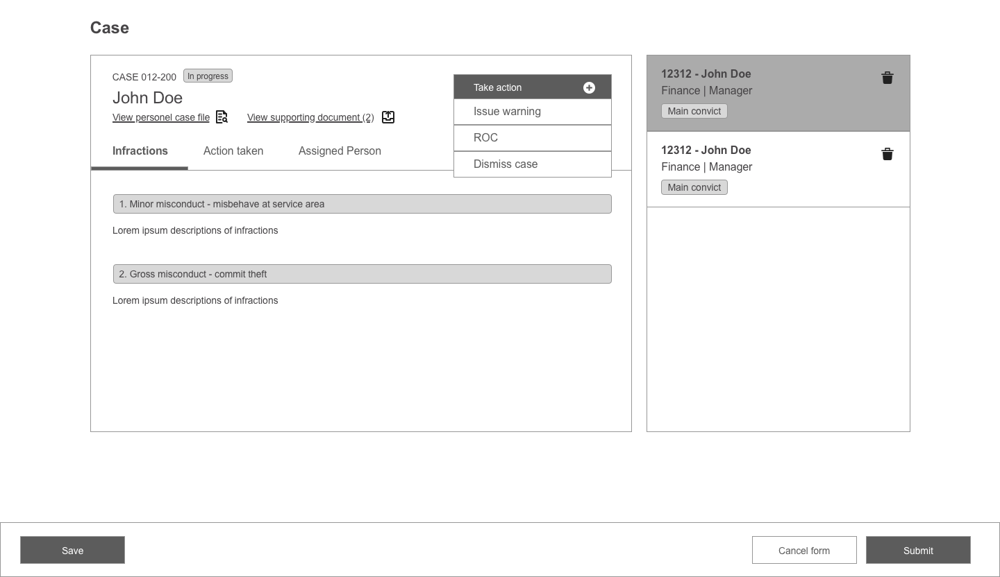

One-Source-For-All Case Management 🕵
How might we ease and enhance the work in handling cases within a big organization?
Background
Marina Bay Sands has a 5,000-10,000 employeed and currently handing their employee’s cases manually. This result in time ineffectiveness and disorganized way of work.
The project took 3 months in firming up the requirements and process. The team consisted of myself, a business analyst, a project manager and developers. We worked together with product owner, users, and multiple stakeholders.
My role
User Research, Process Flow, User Journey, Wireframe, Prototype, UI Design.
Goal & Problems
Goal
Increase the productivty, reliability, and time efficiency in case handling.
Current Problems
1. Manual processing with excel and paper sheets, resulting in disorganized way of storing and withdrawing.
2. Time inefficiency in back-and-forth information passing between one and another (e.g seeking approval)
3. Lack of reliability and security with current man-handling process.
Approach
Sponsored Users Interview (As-Is Process)
Me and a business analyst condcuted a series of workshops to understand the current process and align everybody’s ideas into a consensus. Driving the conversation with a framework (roles & stages) that helps to fill in our process map.
Focus Group
We gathered key points from our user focus groups. On their tasks, goals, and pain points. Together we brainstormed and synteshize possible features to corporate in the system.

Key Points
1. Organisation of data placement
Make it easier to look up on cases that matters to each roles.
2. High-level analytics on cases
For the organization to gain insights on therid development.
3. Reminders and Alerts
Cut time inefficiency to avoid delay between roles.
4. Tracking Activity
To log all activities for security and reliability purpose.
Design considerations
I started with triggers and actions each roles need to do as my guidance to sketch out the screens as I’m trying to get one layout that can be used as much throughout the process for every role to retain consistency.


The page structured as such to be reused for every role.

 

All Cases
Page where users look up for their cases and check the status.

Structure of the main case page
See the background of the incident and see multiple cases. Trigger & record actions for each alleged team member. And look up on personell that involved in the case (e.g their manager, HR representative, etc.)
We made sure all screens are flown together and created a UI guideline to our developers which helped in cutting down development time.
Result
We managed to meet timeline and finally we get the product running and used by the relevant department in Marina Bay Sands.